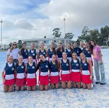
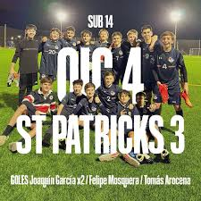
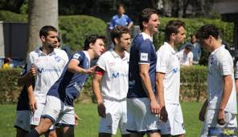

old ivy club
| inicio | horarios | suscripciones | search |
|
old ivy club |
||||
|
|||||
El 4 de agosto de 1978 se funda el Old Ivy Club con el fin de promover y realizar actividades sociales, culturales y deportivas así como también para establecer vínculos de amistad y compañerismo entre ex alumnos del colegio. La comisión fundadora estuvo integrada por: Mara Teresa Marquez de Gasparri, Elizabeth Thompson de Borrás, Alvaro Cuñarro Bandeira, Juan Alberto Rivera Freitas, Ofelia Cibils del Campo, Carlos Carrau y Daniel Darriulat.Ver horarios |
 | ||||